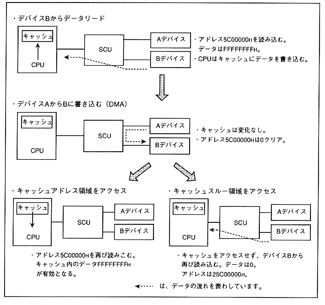

When accessing an area that can be rewritten by devices other than the CPU, such as I / O ports, external device work RAM, and SCU registers, if the cache hits, a value different from the actual value is returned. May come. In such a case, the cache-through area must be accessed.
Figure 1.4 shows the operation description when a cache hit occurs, and Figure 1.5 shows the cache-through mapping.
Figure 1.4 Explanation of operation when cache hit
